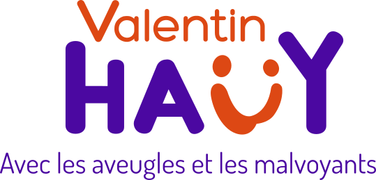
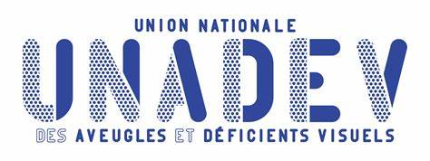

Témoignages
Découvrez les retours des participants ayant testé notre jeu.
Jean-Marie LEPEN
"Participer à ce jeu m'a ouvert les yeux sur les défis quotidiens des personnes malvoyantes."
Marie Curie
"Une expérience enrichissante qui sensibilise de manière ludique."
Partagez votre expérience
Nos Partenaires

Association Valentin Haüy - Travaillant pour l'inclusion des personnes aveugles et malvoyantes.

UNADEV - Promouvant l'accessibilité et l'inclusion pour tous.